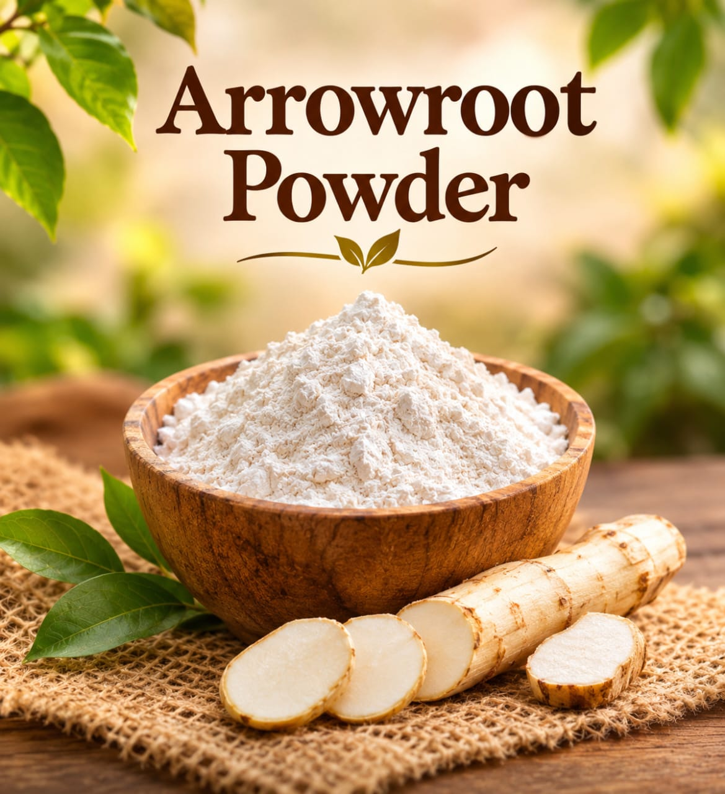
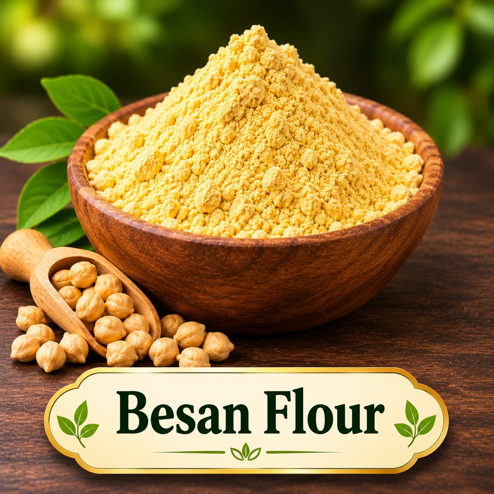
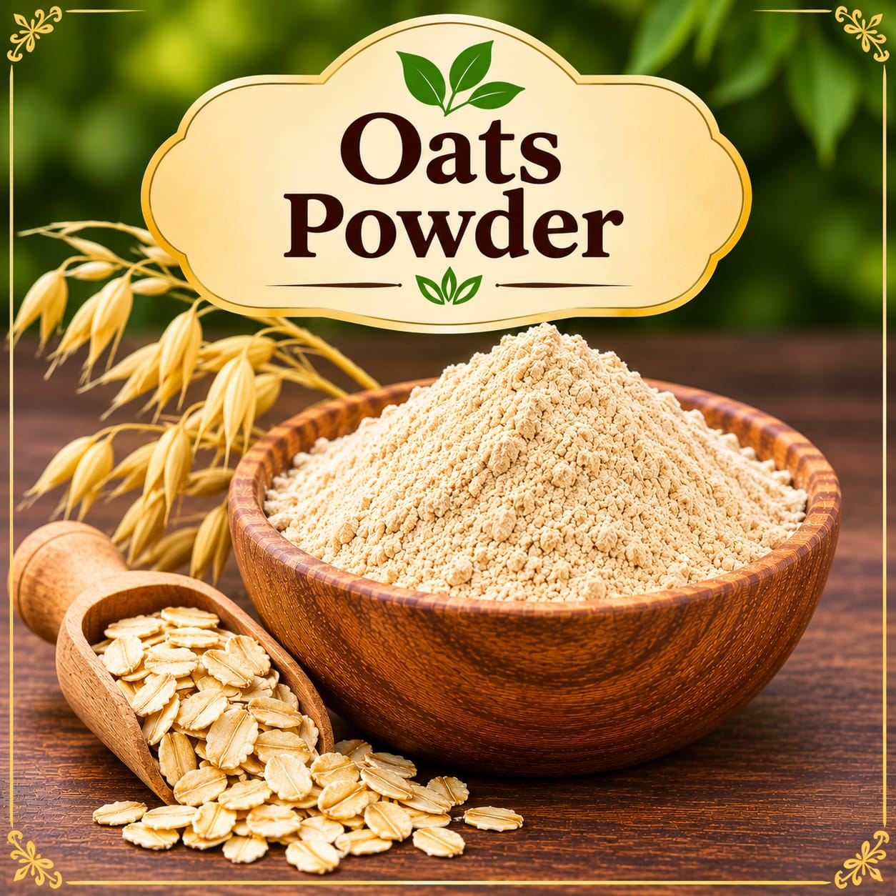

Pantry powder
Arrowroot Powder
Finely milled arrowroot for ingredient collections and DIY formulations.
Ask for current priceAsk
Browse pantry powders and flours in the Sahaj Organics collection. Ingredients include arrowroot, besan, coffee, oats, and rice flour; ask us about current availability and prices.
Browse pantry ingredientsThese familiar pantry ingredients are supplied as powders or flours. Select ingredients based on the needs of your own recipe and verify suitability and use rates for the finished product.

Finely milled arrowroot for ingredient collections and DIY formulations.

A finely milled flour made from chickpeas, also called gram flour.

Oats ground into a fine powder for handmade formulations.
Product names describe the ingredients offered; ask us about the product grade, available size, and current price before ordering.
Have a particular pantry ingredient in mind? Contact Sahaj Organics to check availability and ask about ordering.